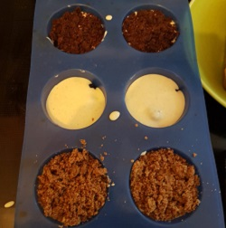

(Low-Carb) Käsekuchen-Muffins
Backzeit: 30 min
Zubereitungszeit: 15 min
Low-Carb:
- 70g Mandelmehl
- 7g Stevia-Xylith
- 28g Butter
- 15g Ei
nicht Low-Carb:
- 100g Mehl
- 20g Kakao
- 40g Zucker
- 40g Butter
- 15g Ei
Quarkfüllung:
- 100g Frischkäse
- 250g Quark
- 5g VanilleXylith + 10g SteviaXylith / 50g Zucker
- Restei + 1 ganzes
- Heidelbeeren
- Für den Boden alle Zutaten verkneten, für die Low-Carb Muffins den ganzen Teig auf dem Boden der Förmchen andrücken, für die normale Variante nur 2/3 des Teiges nehmen.
- Optional: bei 180°C ca 10 min bei Ober-/Unterhitze vorbacken.
- Alle Zutaten für die Quarkfüllung vermischen, auf die Formen verteilen, Heidelbeeren darauf geben und gegebenenfalls noch den restlichen Teig als Streußel darauf geben.
- Bei 180°C Ober-/Unterhitze für 20 min backen, dann weitere 10 min bei 210°C.
- Heidelbeeren mit Zucker/Xylith aufkochen und pürieren, als Soße zu den Muffins reichen.
